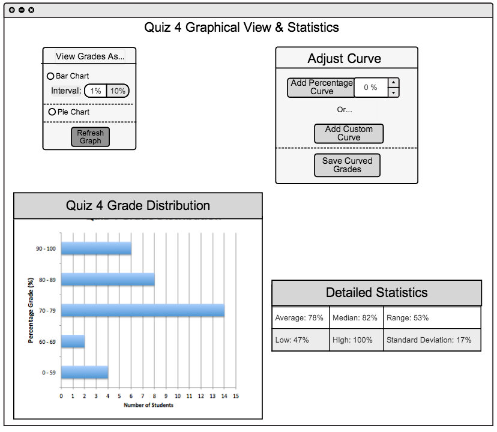

2.6 View Stats and Graphs
This following section demonstrates what the grader will see when they have clicked the view stats button below an assignment column. Upon clicking that button the view in figure 2.6 A is displayed.

Figure 2.6 A: Stats and Graph Main View
At the top of the window a title is shown so the user can confirm that they are looking at the statistics and graphs for the correct assignment/quiz//test. There are three distinct parts that make up the functionality of the stats and graph view. The scores for an assignment are visually represented in a graphical representation such as a bar chart of a pie chart. Secondly, there is a statistical chart showing the breakdown for the assignment/quiz/test. Lastly, there are buttons which will allow you to adjust the curve of the assignment.
Prev: View Stats on Spreadshseet
| Next: Graph View
| Top: index